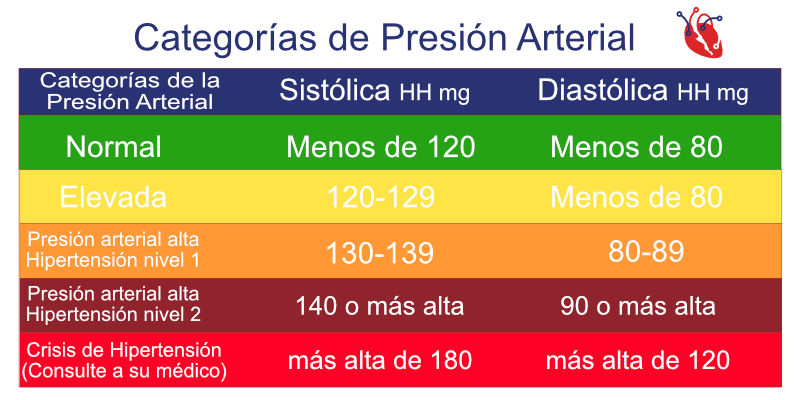

La presión arterial es la fuerza de la sangre contra las paredes de las arterias y se mide en mmHg (milÍmetros de mercurio) con dos números: sistólica (máxima) y diastólica (mÍnima), siendo normal <120/80
Mantener una presión arterial saludable es clave para prevenir enfermedades cardiovasculares, derrames cerebrales y otros problemas de salud. Sigue estas recomendaciones:
El sobrepeso aumenta la presión arterial. Perder incluso un 5-10% del peso corporal puede marcar una gran diferencia.
El estrés crónico eleva la presión arterial. Prueba técnicas como:
Fumar daña los vasos sanguÍneos y sube la presión arterial. Dejar de fumar mejora la salud cardiovascular rápidamente.
En algunas personas, la cafeÍna eleva la presión. Si eres sensible, limita el café, té o energizantes.
Si tu médico te receta medicamentos para la presión, tómalos según las indicaciones.
🧄 Ajo, 🥤 jugo de remolacha, 🵠té de hibisco y 🟠omega-3 pueden tener efectos beneficiosos.